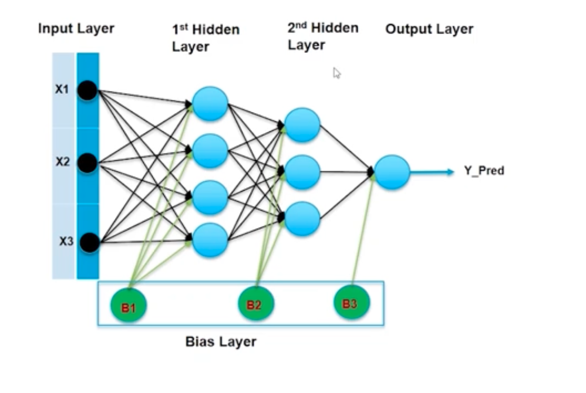
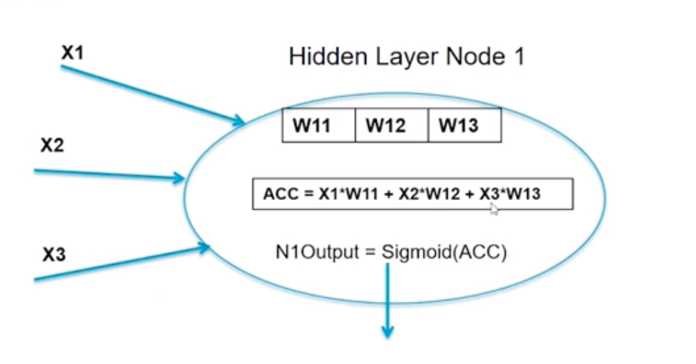
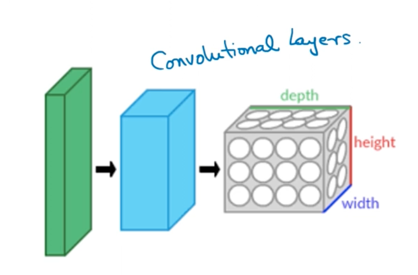
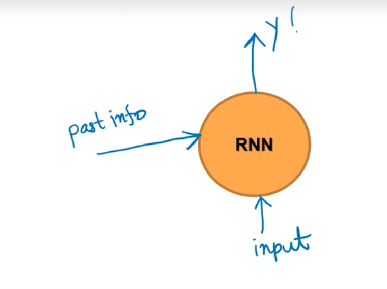

A Neural Network is a machine learning model inspired by the structure and function of the human brain. It is built from layers of interconnected nodes called neurons that collectively learn to map input data to a desired output. Neural Networks excel at tasks involving complex, high-dimensional data — including image recognition, natural language processing, and speech recognition.
The design of an artificial neuron is a direct analogy to the biological neuron:
| Biological Neuron | Artificial Neuron |
|---|---|
| Dendrites receive signals | Inputs (X1, X2, … Xn) received |
| Cell body processes signals | Weighted sum computed |
| Axon transmits the result | Activation function applied → Output produced |
Just as a biological neuron "fires" only when the incoming signal is strong enough, an artificial neuron activates only when its weighted input crosses a threshold — controlled by the activation function.
An Artificial Neural Network (ANN) consists of an input layer, one or more hidden layers, and an output layer. Every neuron in one layer connects to every neuron in the next — this is a fully connected (or dense) architecture.
| Component | Role |
|---|---|
| Input Layer | Receives raw features (X1, X2, X3). One neuron per feature. |
| Hidden Layers | Extract and transform features progressively. Each additional layer learns more abstract representations. |
| Output Layer | Produces the final prediction (Y_Pred). Single neuron for regression/binary; multiple for multi-class. |
| Weights (W) | Learnable parameters on every connection. Adjusted during training via backpropagation. |
| Bias (B) | An extra parameter per layer (B1, B2, B3…) that shifts the activation function, allowing the model to fit data that doesn't pass through the origin. |
| Activation Function | Introduces non-linearity inside each neuron (e.g., Sigmoid, ReLU, Tanh). Without it, the network collapses to a simple linear model regardless of depth. |
| Loss Function | Quantifies the error between predicted and actual output (e.g., Cross-Entropy, MSE). The training goal is to minimise this. |
| Optimizer | Algorithm that updates weights to reduce the loss (e.g., SGD, Adam, RMSProp). |

Reading the diagram: All three inputs (X1, X2, X3) fan out to every neuron in the 1st Hidden Layer. Those neurons then fan out to every neuron in the 2nd Hidden Layer, which finally connects to the single Output neuron (Y_Pred). The green Bias neurons (B1, B2, B3) inject a constant offset into each layer independently — they are not connected to the input.
Every neuron performs exactly two operations:
Step 1 — Accumulate (weighted sum of inputs + bias):
$$\text{ACC} = X_1 \cdot W_{11} + X_2 \cdot W_{12} + X_3 \cdot W_{13} + b$$
Step 2 — Activate (apply a non-linear function):
$$\text{Output} = \sigma(\text{ACC}) = \text{Sigmoid}(\text{ACC}) = \frac{1}{1 + e^{-\text{ACC}}}$$

This same two-step computation runs at every neuron across every layer. The weights $W_{ij}$ are what the network learns — backpropagation computes the gradient of the loss with respect to each weight, and the optimizer updates them to reduce the error.
| Function | Formula | When to use |
|---|---|---|
| Sigmoid | $\frac{1}{1+e^{-x}}$ | Binary classification output layer |
| ReLU | $\max(0, x)$ | Hidden layers (most common) |
| Softmax | $\frac{e^{x_i}}{\sum e^{x_j}}$ | Multi-class classification output layer |
| Tanh | $\frac{e^x - e^{-x}}{e^x + e^{-x}}$ | Hidden layers when output needs to be in [-1, 1] |
Training adjusts the weights and biases so the network's predictions get closer to the true labels. The process follows four steps every iteration:
This loop repeats for many epochs until the loss converges.
A Neural Network with two or more hidden layers is called a Deep Neural Network (DNN) — the foundation of modern Deep Learning.
The depth is what makes DNNs powerful: each layer builds on the previous one, learning increasingly abstract representations:
Raw pixels → Edges → Shapes → Parts → Objects
(Input) (Layer 1) (Layer 2) (Layer 3) (Output)
This hierarchical feature learning makes DNNs especially effective for:
In Keras, a fully connected layer is implemented as
Dense(units, activation='relu'). Stacking multipleDenselayers gives you a DNN.
Two theorems form the theoretical backbone of why neural networks work. You don't need to prove them — just understand what they guarantee.
Any continuous function f defined on an n-dimensional cube is representable by sums and superpositions of continuous functions of only one variable.
$$f(x_1, x_2, \ldots, x_n) = \sum_{q=1}^{2n+1} g!\left(\sum_{p=1}^{n} \lambda_p ,\phi_q(x_p)\right)$$
Simple way to think about it:
Imagine predicting house prices — the price depends on size, location, age, number of rooms — many variables at once. That's a complex, multi-variable function. Kolmogorov said: no matter how complicated that relationship is, you can always break it down into simpler single-variable functions stacked together.
A neural network does exactly that — each neuron handles a small, simple piece of the problem. Stack enough of them together and the network can model any relationship, no matter how complex.
The guarantee: A neural network is powerful enough to learn any pattern in data. This is formalised as the Universal Approximation Theorem.
Given a set of training data that is not linearly separable, one can with high probability transform it into a training set that is linearly separable by projecting it into a higher-dimensional space via some non-linear transformation.
X1 ──┐ y = f(x)
├──► [ Model / Transform P ] ──► separable in higher-dim space
X2 ──┘
Simple way to think about it:
Imagine red and blue dots scattered on a table — completely mixed up, no single straight line can separate them. Now imagine picking up all the blue dots and placing them on a raised platform (a new dimension). Suddenly, looking from the side, blue is above and red is below — a flat horizontal cut separates them perfectly.
That "raised platform" is what a hidden layer does. It transforms the data into a new space where the problem becomes simpler to solve. Each additional hidden layer adds another dimension to work with.
The guarantee: No matter how tangled your data is, enough hidden layers can always untangle it into something separable.
Together in one line: Kolmogorov says a network can learn anything. Cover says why adding layers makes it easier to learn hard things.
| Type | Description | Use Cases |
|---|---|---|
| ** Feedforward Neural Network (FNN) | Data flows in one direction from input to output. No cycles. | Basic classification/regression tasks |
| ** Convolutional Neural Network (CNN) | Uses convolutional layers to capture spatial hierarchies. | Image recognition, object detection |
| Recurrent Neural Network (RNN) | Has loops to maintain state across sequences. | Time series, language modeling |
| Transformer | Uses self-attention to capture long-range dependencies. | NLP, sequence modeling |
| Generative Adversarial Network (GAN) | Two networks (generator and discriminator) compete to create realistic data. |
It has a straightforward architecture, making it easy to understand and implement. However, it may struggle with complex data like images or sequences, which is why more specialized architectures (like CNNs and RNNs) were developed.
Single-layer FNN (Perceptron) — can only learn linear decision boundaries:
i/p μL (hidden) o/p
○ ─────────── ○
/ \
○ ○ ──── ○
\ /
○ ─────────── ○
Single layer FNNs are also known as Perceptrons — they can only learn linear decision boundaries. Adding hidden layers allows the network to learn non-linear relationships, making it much more powerful.
Multi-layer FNN (MLP) — fully connected across layers, can learn non-linear boundaries:
i/p μL (hidden) o/p
○ ──────────── ○
│ ╲ ╱ │
│ ╲ ╱ │
│ ╲ ╱ ├──── ○
│ ╱ ╲ │
│ ╱ ╲ │
○ ──────────── ○
Every input node connects to every hidden node (hence the crossing lines), and every hidden node connects to the output — this is the fully connected property.
Muti-layer FNNs are the foundation of deep learning, but they are not the best choice for all tasks. For example, they don't capture spatial relationships in images (where CNNs excel) or temporal dependencies in sequences (where RNNs shine).
Radial Basis Networks (RBNs) are a type of FNN that uses radial basis functions as activation functions. They have a single hidden layer prototype vector and are often used for function approximation and classification tasks. However, they are less common than other architectures in modern deep learning applications.

The convolutional layers recognise local patterns in the input data, pixel by pixel, and build up to more complex features as you go deeper into the network. This makes CNNs particularly effective for image-related tasks, where spatial relationships are crucial.

How it works — the loop:
↑ Y (output)
│
past info ──► [ RNN ]
│ ▲
│ │
└────┘ ← feeds back its own output as "past info" next step
│
input
At every time step the RNN takes two things:
It combines both, produces an output, and passes the new hidden state forward to the next step. This loop is what makes RNNs fundamentally different from FNNs.
Real-world example — Google Autotyping:
When you type "Quick brown fox…" into Google search, it suggests completions like "jumps over the lazy dog". The model doesn't look at just the last word — it reads the whole sequence so far and predicts what comes next. That's an RNN at work.
"Quick" → "brown" → "fox" → [ predicts: "jumps" ]
↓ ↓ ↓
hidden₁ → hidden₂ → hidden₃ (memory flows left to right)
Key limitation: Vanilla RNNs struggle to retain information over long sequences — the memory "fades" after many steps. This is the vanishing gradient problem. More advanced variants like LSTM (Long Short-Term Memory) and GRU (Gated Recurrent Unit) were designed specifically to solve this.